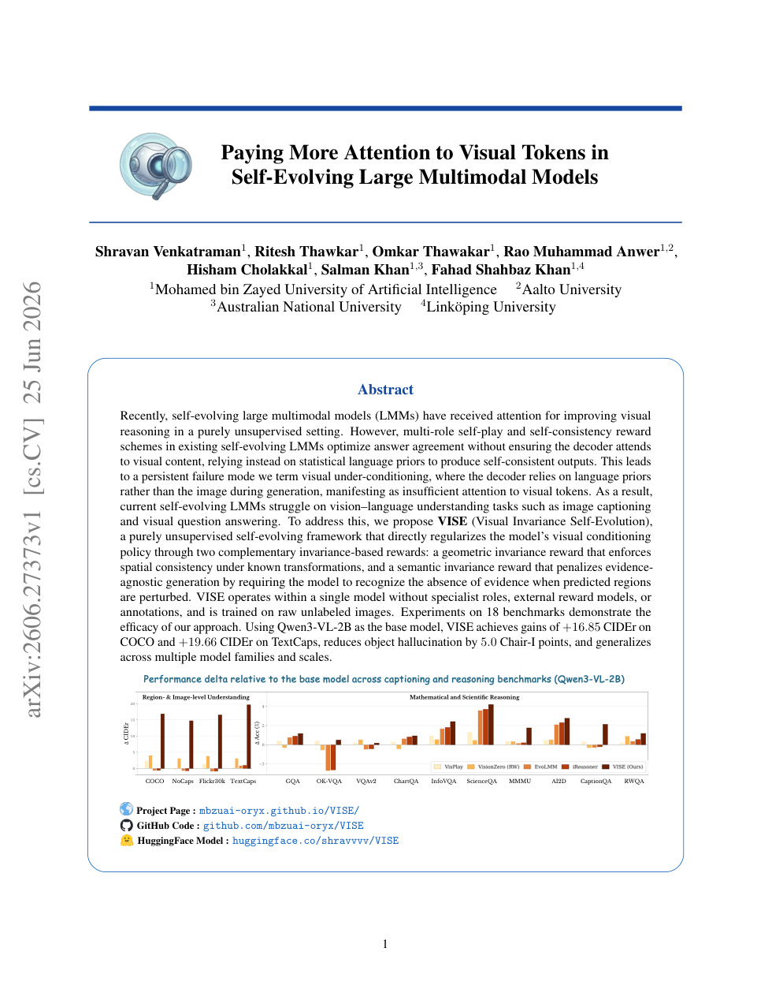

arXiv new; ECCV 2026; self-evolving LMM · P1 · 2026-06-27
Paying More Attention to Visual：自监督/自演化 VLM 的风险是越训越语言化；这篇提醒通用视觉表征必须显式维护视觉证据权重
把多模态自训练的失败模式定位到 token attention 层面，给出更直接的视觉 grounding 修正信号。
编号2606.27373
优先级P1
类别arXiv new; ECCV 2026; self-evolving LMM
会议arXiv new; ECCV 2026; self-evolving LMM
方法分析 self-evolving LMM 中语言捷径导致的 visual token under-attention，并设计奖励或约束让训练更依赖视觉 token。
来源arXiv / OpenReview
先说结论。自监督/自演化 VLM 的风险是越训越语言化；这篇提醒通用视觉表征必须显式维护视觉证据权重。 把多模态自训练的失败模式定位到 token attention 层面，给出更直接的视觉 grounding 修正信号。

核心问题
自监督/自演化 VLM 的风险是越训越语言化；这篇提醒通用视觉表征必须显式维护视觉证据权重。
方法拆解
分析 self-evolving LMM 中语言捷径导致的 visual token under-attention，并设计奖励或约束让训练更依赖视觉 token。
主要贡献
把多模态自训练的失败模式定位到 token attention 层面，给出更直接的视觉 grounding 修正信号。
实验看点
摘要报告在多模态理解任务中改善 visual grounding，尤其是需要精细视觉证据的场景。
局限与读法
仍依赖 LMM 自训练框架，是否能迁移到纯视觉 encoder 或小模型预训练还需要验证。